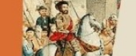
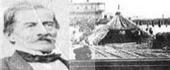
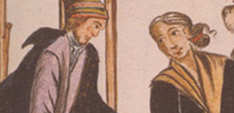

Webs Recomendadas

La Independencia del Perú
¿Sabías que el proceso más antiguo que dio origen a la independencia del Perú fueron las reformas borbónicas? A esto habría que sumarle una serie de aspectos sociales, políticos y económicos que permitió este proceso latinoamericano. Entérate de todos los pormenores de este gran momento de nuestra historia, gracias a esta web educativa muy completa.

La conquista del Perú
Perú Prehispánico

Perú Republicano
El virreynato del Perú

El siglo XVIII en el Perú
Literatura Peruana